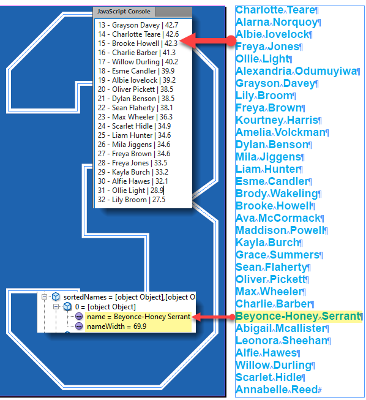
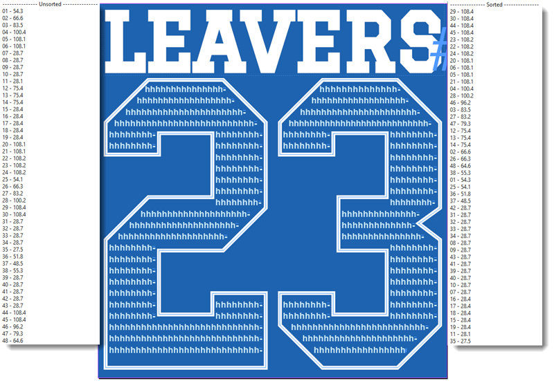

Algorithm for fitting text into an irregular shape
Continued from the post on the Adobe InDesign forum.
Currently, my idea is to measure the length of each name, the available space in the shape (measuring each line), and finally, insert names one by one fitting them into lines. An alternative approach could be to place all names first and then shuffle them using the above-mentioned measurements: e.g. longer names into longer lines.
Step 1 — measure names
At first, I was going to measure them by counting the characters: the more characters, the longer name. But then I decided to make more precise ‘linear’ measurements using the horizontalOffset property. I wrote this code to get a list (array) of names sorted by width. Each element here is an object containing a name and its width. I assume that the list of names has been already placed into a temporary text frame on the pasteboard.

var scriptName = "Sort Names",
doc = app.activeDocument;
SortNames();
function SortNames() {
var n, j, nameWidth, sortedNames,
textFrame = doc.textFrames.itemByID(624),
names = textFrame.lines.everyItem().getElements(),
unsortedNames = [];
$.writeln("--------------- Unsorted ---------------");
for (n = 0; n < names.length; n++) {
name = names[n];
nameWidth = GetLTextWidth(name);
$.writeln(ZeroPad((n + 1), 2) + " - " + name.contents.replace(/\r$/, "") + " | " + nameWidth);
unsortedNames.push({
name: name.contents.replace(/\r$/, ""),
nameWidth: nameWidth
});
}
sortedNames = unsortedNames.sort(function(a, b) {return b.nameWidth - a.nameWidth;});
$.writeln("--------------- Sorted ---------------");
for (j = 0; j < sortedNames.length; j++) {
item = sortedNames[j];
$.writeln(ZeroPad((j + 1), 2) + " - " + item.name.replace(/\r$/, "") + " | " + item.nameWidth);
}
Stringify(sortedNames);
}
function Stringify(arr) {
var item, str;
for (var i = 0; i < arr.length; i++) {
item = arr[i];
str = item.toSource() + ((i < (arr.length - 1)) ? "|" : "");
WriteToFile(str);
}
}
function WriteToFile(text) {
file = new File("~/Desktop/" + scriptName + ".txt");
file.encoding = "UTF-8";
if (file.exists) {
file.open("e");
file.seek(0, 2);
}
else {
file.open("w");
}
file.write(text);
file.close();
}
function GetLTextWidth(txt) {
try {
var l = txt.characters[0].horizontalOffset;
var r = (txt.characters[-1].contents == "\r") ? txt.characters[-2].horizontalOffset : txt.characters[-1].horizontalOffset;
var w = r - l;
w = RoundString(w, 1);
return w;
}
catch(err) {
$.writeln(err.message + ", line: " + err.line);
}
}
function RoundString(numVal, decimals) {
var retVal = Math.round(numVal * Math.pow(10,decimals)) + "";
retVal = retVal.substring(0, retVal.length - decimals) + "." + retVal.substring(retVal.length - decimals);
return retVal;
}
function ZeroPad(num, digit) {
var tmp = num.toString();
while (tmp.length < digit) {
tmp = "0" + tmp;
}
return tmp;
}
Step 2 — measure lines
This step uses the same approach as step 1. Here I temporarily filled the shape with text to measure lines. I get two arrays: unsorted and sorted. Each element contains a line index (position) and length. I’m not sure how would I use it in the next step. This step takes quite a long time (a few seconds), so I am planning to do it only once — for each combination of font family, style, and size — and store it in a sort of database: as a text file or using the insertLabel.

var scriptName = "Sorted Lines",
debug = true,
doc = app.activeDocument;
app.doScript(SortLines, ScriptLanguage.JAVASCRIPT, undefined, ((File.fs == "Macintosh") ? UndoModes.ENTIRE_SCRIPT : UndoModes.FAST_ENTIRE_SCRIPT), "\"" + scriptName + "\" Script");
function SortLines() {
var textFrame = doc.textFrames.itemByID(372);
var lines = textFrame.lines.everyItem().getElements();
var line, lineLength;
var n, i, l;
var unsortedLines = [];
var sortedLines = [];
$.writeln("--------------- Unsorted ---------------");
for (var n = 0; n < lines.length; n++) {
line = lines[n];
lineLength = GetLTextWidth(line);
$.writeln(ZeroPad((n + 1), 2) + " - " + lineLength);
unsortedLines.push({
idx: n,
lineLength: lineLength
});
}
sortedLines = unsortedLines.sort(function(a, b) { return b.lineLength - a.lineLength;});
$.writeln("--------------- Sorted ---------------");
for (var j = 0; j < sortedLines.length; j++) {
$.writeln(ZeroPad(sortedLines[j].idx +1, 2) + " - " + sortedLines[j].lineLength);
}
Stringify(sortedLines);
}
function Stringify(arr) {
var item, str;
for (var i = 0; i < arr.length; i++) {
item = arr[i];
str = item.toSource() + ((i < (arr.length - 1)) ? "|" : "");
WriteToFile(str);
}
}
function WriteToFile(text) {
file = new File("~/Desktop/" + scriptName + ".txt");
file.encoding = "UTF-8";
if (file.exists) {
file.open("e");
file.seek(0, 2);
}
else {
file.open("w");
}
file.write(text);
file.close();
}
function GetLTextWidth(txt) {
try {
var l = txt.characters[0].horizontalOffset;
var r = txt.characters[-1].horizontalOffset;
var w = r - l;
w = RoundString(w, 1);
return w;
}
catch(err) {
$.writeln(err.message + ", line: " + err.line);
}
}
function RoundString(numVal, decimals) {
var retVal = Math.round(numVal * Math.pow(10,decimals)) + "";
retVal = retVal.substring(0, retVal.length - decimals) + "." + retVal.substring(retVal.length - decimals);
return retVal;
}
function ZeroPad(num, digit) {
var tmp = num.toString();
while (tmp.length < digit) {
tmp = "0" + tmp;
}
return tmp;
}
Step 3 — fill in the shape with names
The following code is just for illustration: a possible approach to use. I start from the 1st line using the unsorted list and for each line, I’m trying to find the name that fits the line best: has the closest width to the line’s length (the FindClosest function).
For example, for the 1st line (length = 54.3 mm) it finds the name Abigail Mcallister (width = 49.8, the 2nd in the array of sorted names) which is inserted into the shape and removed from the array. Then repeat it to the next line, and so on.
var scriptName = "Fill Shape",
debug = true,
doc = app.activeDocument,
gStrNames, gUnsortedLines;
app.doScript(Main, ScriptLanguage.JAVASCRIPT, undefined, ((File.fs == "Macintosh") ? UndoModes.ENTIRE_SCRIPT : UndoModes.FAST_ENTIRE_SCRIPT), "\"" + scriptName + "\" Script");
function Main() {
var textFrame = doc.textFrames.itemByID(372),
story = textFrame.parentStory,
lines = textFrame.lines.everyItem().getElements(),
line, lineLength, closest;
if (debug) $.writeln("--------------- closest ---------------");
InitVars();
var unsortedLines = RestoreData(gUnsortedLines);
var sortedNames = RestoreData(gStrNames);
for (var i = 0; i < unsortedLines.length; i++) {
line = unsortedLines[i];
lineLength = line.lineLength;
if (debug) $.writeln("Before: " + sortedNames.length);
closest = FindClosest(sortedNames, lineLength, "nameWidth");
if (closest == null) {
if (debug) $.writeln("!!! closest == null, i = " + i);
continue;
}
// name | width | index
if (debug) $.writeln(ZeroPad((i + 1), 2) + " - " + closest[0] + " | " + closest[1] + " | " + closest[2]);
sortedNames.splice(closest[2], 1);
if (debug) $.writeln("After: " + sortedNames.length);
story.insertionPoints[-1].contents = closest[0] + " ";
}
}
function FindClosest(array, elem, prop) {
var item, delta,
result = null,
minDelta = null,
minIndex = null;
for (var i = 0 ; i < array.length; i++) {
item = eval("array[i]." + prop);
delta = Math.abs(item - elem);
if (minDelta == null || delta < minDelta) {
minDelta = delta;
minIndex = i;
}
else if (delta == minDelta) {
result = [eval("array[i - 1].name"), item, i - 1];
break;
}
else { // delta > minDelta
result = [eval("array[i - 1].name"), eval("array[i - 1]." + prop), i - 1];
break;
}
} // end for
return result;
}
function RestoreData(input) { // File / String
var str,
restoredArr = [];
if (input.constructor.name == "File") {
str = ReadTxtFile(input);
}
else if (input.constructor.name == "String") {
str = input;
}
var arr = str.split("|");
for (var i = 0; i < arr.length; i++) {
restoredArr.push(eval(arr[i]));
}
return restoredArr;
}
function GetLTextWidth(txt) {
try {
var l = txt.characters[0].horizontalOffset;
var r = txt.characters[-1].horizontalOffset;
var w = r - l;
w = RoundString(w, 1);
return w;
}
catch(err) {
$.writeln(err.message + ", line: " + err.line);
}
}
function RoundString(numVal, decimals) {
var retVal = Math.round(numVal * Math.pow(10,decimals)) + "";
retVal = retVal.substring(0, retVal.length - decimals) + "." + retVal.substring(retVal.length - decimals);
return retVal;
}
function ReadTxtFile(file) {
file.open("r");
var txt = file.read();
file.close();
return txt;
}
function ZeroPad(num, digit) {
var tmp = num.toString();
while (tmp.length < digit) {
tmp = "0" + tmp;
}
return tmp;
}
// See the InitVars() function in the zip archive at the bottom of the page.
I realize that a much more complex algorithm is necessary: maybe find a combination of two-three names that fit the line best. But at the moment I got stuck: don’t know where to move next. So, any guidance is welcome.
Here are the code snippets and test files mentioned on this page.